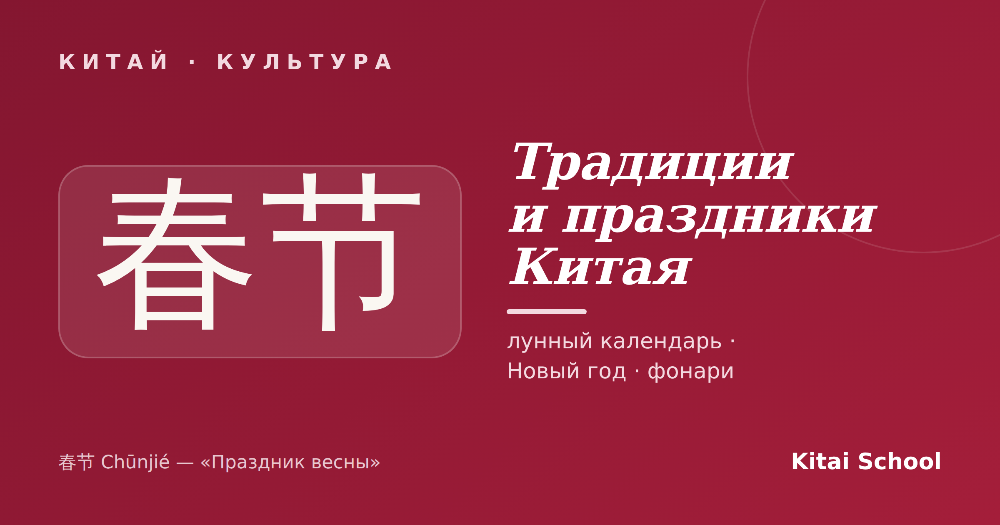
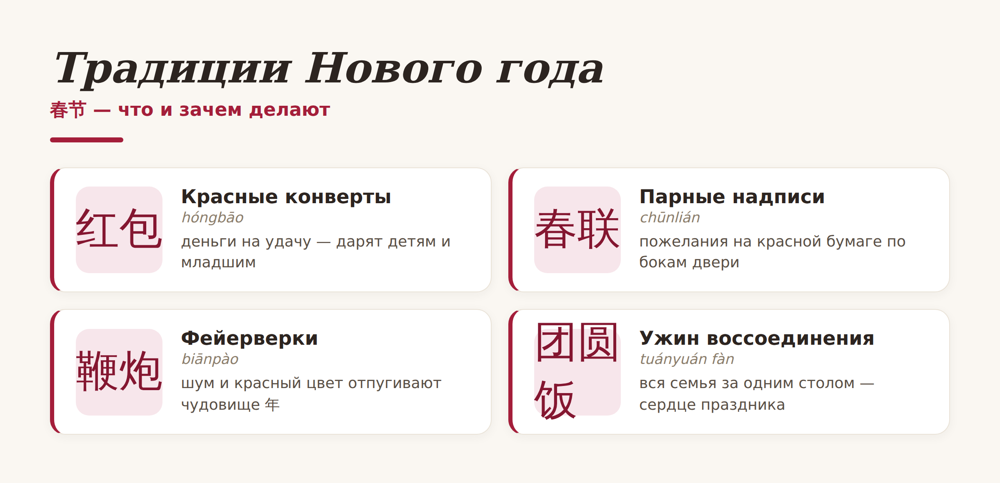
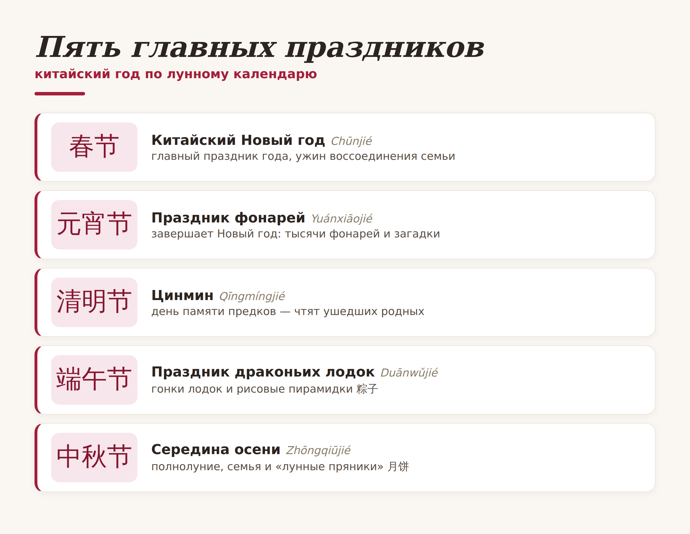
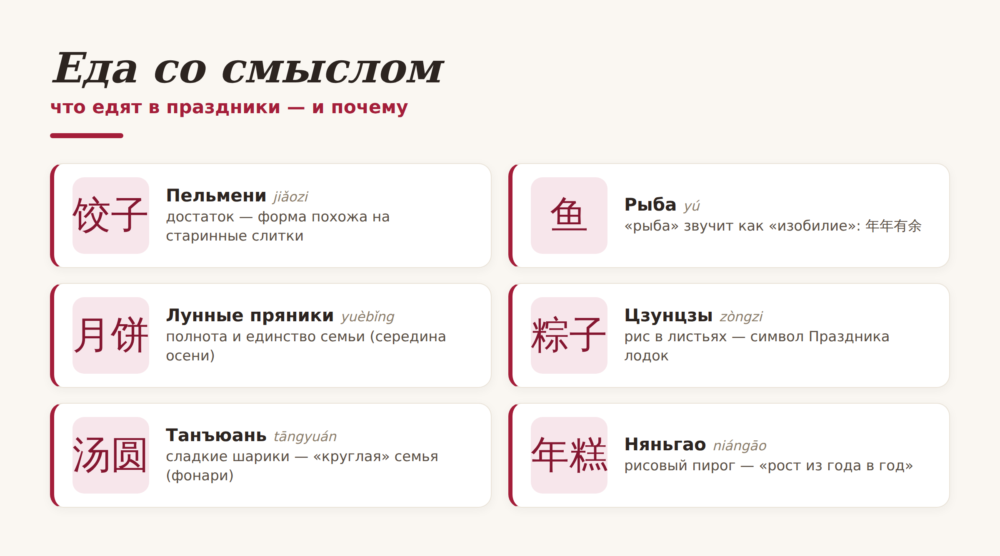

Китай · культура

Китайские праздники живут по своему, лунному календарю — поэтому их даты каждый год «плавают», а сами торжества совсем не похожи на привычные нам. Здесь запускают в небо тысячи фонарей, дарят деньги в красных конвертах, едят «лунные пряники» и целыми семьями собираются за одним столом за сотни километров от дома. За каждым обычаем — древняя легенда.
Разберём главные праздники и традиции Китая — что отмечают, когда и почему. Давайте по порядку.
Главное, что нужно понять: традиционные китайские праздники считают по лунному календарю, а не по нашему солнечному. Поэтому один и тот же праздник каждый год выпадает на разные числа — как наша Пасха. Отсюда и «плавающие» даты, и то, что китайский Новый год приходит не 1 января, а зимой между концом января и серединой февраля.
Самый главный праздник года — 春节 (Chūnjié), «Праздник весны», он же китайский Новый год. Это как наши новогодние каникулы, помноженные на десять: вся страна едет домой, к семье, — это крупнейшая ежегодная миграция людей на планете. Главное событие — ужин воссоединения 团圆饭 (tuányuán fàn) в кругу семьи.

По легенде, красный цвет и фейерверки отпугивали чудовище 年 (Nián), которое боялось красного и громкого шума. Отсюда и цвет, который повсюду, и петарды. А детям и младшим дарят 红包 (hóngbāo) — красные конверты с деньгами на удачу.
Если окажетесь в Китае в это время — учтите: страна на неделю почти замирает, магазины и офисы закрываются, а билеты раскупают за месяцы. Зато атмосфера — незабываемая.
Год китайца размечен ещё несколькими важными датами — от весеннего поминовения предков до осеннего полнолуния:

Отдельно стоит 元宵节 (Yuánxiāojié) — тот самый Праздник фонарей, ради которого едут в Китай туристы. В пятнадцатый, последний день новогодних торжеств небо и улицы заполняются фонарями 灯笼 (dēnglong), а на них загадывают загадки. Красиво до мурашек.
Если вглядеться, все праздники держатся на нескольких общих ценностях: семья и воссоединение (团圆, tuányuán), почитание предков и красный цвет — цвет удачи, радости и защиты от злого. Поэтому он повсюду: конверты, надписи, фонари, свадебные наряды.
Отдельная красивая деталь — еда со смыслом. Многие блюда едят не просто так, а ради созвучия и символики:

Например, рыбу 鱼 (yú) подают потому, что слово созвучно «изобилию»: есть пожелание 年年有余 (nián nián yǒu yú) — «пусть каждый год будет достаток». А круглые 汤圆 и «лунные пряники» 月饼 символизируют полноту и единство семьи.
Отдельная тема — традиционный костюм. Часто спрашивают, как называется традиционная китайская одежда. Их две главные разновидности. 汉服 (hànfú) — старинное просторное одеяние с запа́хом и широкими рукавами, которое сейчас переживает моду среди молодёжи. А 旗袍 (qípáo, «ципао») — то самое элегантное облегающее платье с высоким воротником, ставшее визитной карточкой китаянки в XX веке.
Китайские традиции на первый взгляд кажутся сложными, но у них простая сердцевина: семья, память и пожелание добра друг другу. Стоит увидеть за красными фонарями именно это — и любой китайский праздник становится по-настоящему близким.
Пусть у вас всё будет по-праздничному! 年年有余。